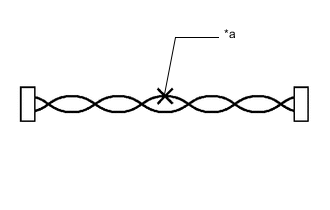
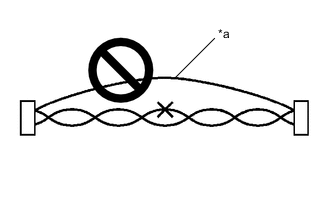
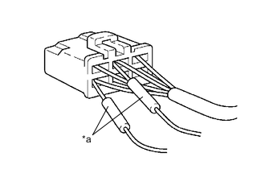
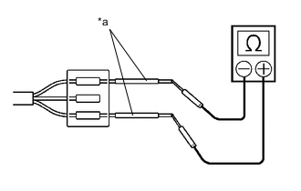

NOTICE FOR INITIALIZATION
Note
When disconnecting the cable from the negative (-) auxiliary battery terminal, initialize the following systems after the cable is reconnected.
| System | See Procedure |
|---|---|
| Lane Departure Alert System (w/ Steering Control) | |
| Intelligent Clearance Sonar System | |
| Parking Assist Monitor System | |
| Simple Intelligent Parking Assist System | |
| Power Door Lock Control System | |
| Pre-crash Safety System | |
| Adaptive High Beam System |
CAN COMMUNICATION SYSTEM TROUBLESHOOTING
Because the order of diagnosis is important to allow correct diagnosis, make sure to begin troubleshooting using How to Proceed with Troubleshooting when CAN communication system related DTCs are output.
Precaution for steering system handling
Be careful when replacing parts. Incorrect replacement could affect the performance of the steering system and result in hazardous driving.
Precaution for SRS airbag system handling
Note
This vehicle is equipped with a Supplemental Restraint System (SRS) which includes parts such as airbags for the driver and front passenger. Failure to carry out service operations in the correct sequence could cause unexpected SRS deployment during servicing and may cause a serious accident. Before servicing (including removal or installation of parts, inspection or replacement), be sure to read Precaution for SRS.
Precaution for when disconnecting a wire harness from a CAN junction connector
When disconnecting a wire harness from a CAN junction connector, use tape or tags to identify each connector and make sure to reconnect each connector to its original location on the CAN junction connector.
Tech Tips
Reconnecting a connector to a location other than its original location on the CAN junction connector will not affect system performance. However, reconnecting connectors to their original locations makes future maintenance easier and avoids negative effects on wire harnesses, such as excessive tension.
For information on how to identify the ECUs or sensors connected to the CAN junction connector, refer to Terminals of ECU.
Bus line repair

| *a | Soldered Area to Be Wrapped with Electrical Tape |
After repairing a bus line with solder, wrap the repaired area with electrical tape.
Note
When installing, make sure that these lines are twisted, because CAN bus lines are likely to be influenced by electrical noise if the bus lines are not twisted.
Ensure that there is no gap between the CANH wire and CANL wire.
Make sure that the distance between the first twist of the wires and the connector is less than 80 mm (3.15 in).
When repairing the CAN bus lines, do not change the length of the lines. (Make sure that the length of the CANH bus line and CANL bus line are the same.)

| *a | Bypass Wire |
Do not use bypass wiring between connectors.
Note
The ability of the twisted bus lines to resist interference will be lost if bypass wiring is used.
Do not use a twisted pair of wires for bypass wiring.
Connector handling

| *a | Tester Probe |
When checking resistance with a tester, insert the tester probes from the backside (harness side) of the connector.

| *a | Service Wire |
When it is not possible to insert the tester from the backside of the connector, using service wires, measure from the front side of the connector.
Precaution for when replacing a gateway function equipped ECU (sub bus monitoring ECU)
When replacing a gateway equipped function ECU (sub bus monitoring ECU) with one which was installed to another vehicle, perform initialization of the sub bus monitoring ECU in order to clear stored bus information.
Note
If the stored bus information does not match the current sub bus configuration, DTCs may be stored and fail-safe functions may operate.
Tech Tips
It is not necessary to perform initialization of a gateway monitoring ECU (sub bus monitoring ECU) when using a sub bus monitoring ECU which was installed to another vehicle with the same sub bus configuration.
Precautions for when a gateway function equipped ECU (sub bus monitor ECU) detects communication DTCs for ECUs not connected to the ECU
Refer to precautions when replacing a gateway function equipped ECU (sub bus monitoring ECU) and initialize the connection information of the ECU.
Clear the DTCs and check that no DTCs are output.
Difference between a pre-installed TOYOTA genuine navigation receiver and a CAN compatible optional navigation receiver
Some navigation receivers are available as CAN compatible optional devices. Be aware that CAN compatible optional devices do not have the same diagnostic features or characteristics of pre-installed TOYOTA genuine navigation receivers.
Note
CAN compatible optional navigation receivers receive data from the CAN communication system. However, most CAN compatible optional navigation receivers do not send signals to the CAN bus main line.
Most CAN compatible optional navigation receivers will not be displayed on the "Communication Bus Check" screen of the GTS.
When checking for DTCs using the GTS, DTCs for CAN compatible optional navigation receivers will not be displayed on the GTS.